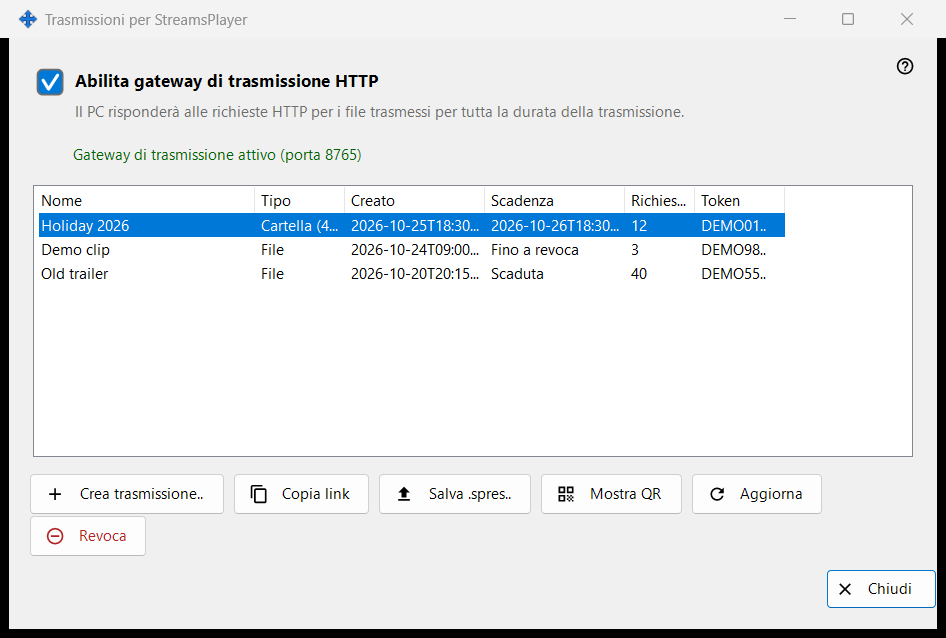
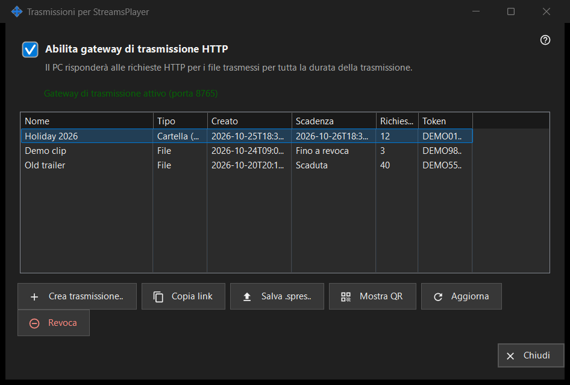

Trasmissioni per StreamsPlayer
Scopo
Gestisce le trasmissioni HTTP di file multimediali e cartelle che questo PC offre all'app StreamsPlayer. Si apre dal pulsante «Trasmissioni..» o dalla voce del menu di aggiunta nella finestra principale di Share Manager, che compaiono solo quando il servizio di condivisione segnala il supporto delle trasmissioni. Un avvio con un percorso apre la finestra e passa subito alla finestra «Crea trasmissione» per quel percorso.


In questo ordine
- Seleziona «Abilita gateway di trasmissione HTTP» oppure crea semplicemente una trasmissione, che attiva il gateway.
- Premi «Crea trasmissione..», scegli il file multimediale, imposta titolo, durata e opzione internet e premi «Trasmetti».
- Il link viene copiato negli appunti.
- Seleziona una riga e usa «Copia link», «Salva .spres..» o «Mostra QR» per consegnare la trasmissione a un dispositivo.
- «Revoca» una trasmissione quando non serve più.
Gli elementi
Interruttore del gateway
La casella attiva o disattiva il gateway HTTP. La riga sotto riporta «Il gateway di trasmissione è disattivato» oppure «Gateway di trasmissione attivo (porta N)». Finché il gateway è attivo, questo PC risponde alle richieste HTTP per i file della trasmissione. Se il gateway non riesce ad avviarsi (porta, firewall), la casella torna al suo stato reale e il motivo compare in una riga rossa sotto; un rifiuto non apre mai una finestra di dialogo.
Elenco delle trasmissioni
Colonne: Nome, Tipo (File, oppure Cartella con il numero dei suoi elementi), Creato, Scadenza (una data, «Fino a revoca» o «Scaduta»), Richieste e Token, che mostra solo i primi sei caratteri. L'elenco si rilegge da solo ogni 5 secondi. Un doppio clic su una riga ne copia il link.
Crea trasmissione..
Chiede un file multimediale e apre la finestra «Crea trasmissione». Dopo che l'hai accettata, il gateway viene attivato se serve, la trasmissione viene creata e il suo link viene copiato negli appunti con i marcatori di riservatezza; un messaggio conferma la copia.
Aggiorna e Revoca
«Aggiorna» è disponibile solo per la trasmissione di una cartella e chiede al servizio di aggiornarla; un messaggio lo conferma. «Revoca» funziona su qualsiasi riga e chiede prima: «Revocare la trasmissione X? Il link smetterà di funzionare immediatamente.» Una trasmissione revocata non si può ripristinare; creane una nuova.
Quando la pagina è disattivata
Se il servizio di condivisione non risponde o non supporta le trasmissioni, la pagina si disattiva da sola sul posto e la riga rossa ne indica il motivo, per esempio che questa versione del servizio di trasmissione è obsoleta oppure che non è stato possibile completare l'azione, con i dettagli nel registro.
Impostazioni del gestore · Impostazioni condivisione SFTP · Impostazioni server di scambio